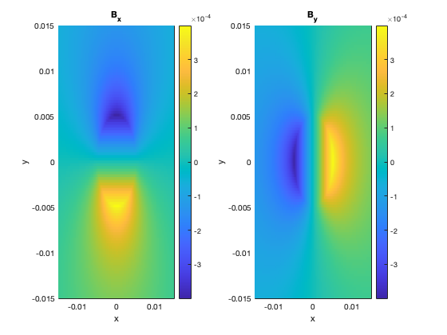
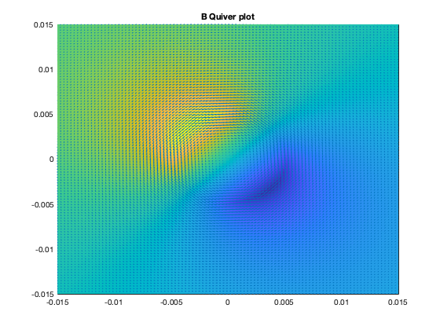
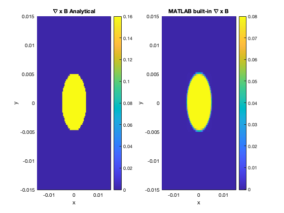

Contents
Introduction
clc
clearvars
close all
Problem 1
disp('Problem 1');
I = 10;
mu0 = 4*pi*10^(-7);
a = 0.005;
lx=100;
ly=100;
x = linspace(-3*a,3*a,lx);
y = linspace(-3*a,3*a,ly);
[X,Y] = meshgrid(x,y);
Bx = zeros(lx,ly);
By = zeros(lx,ly);
for i=1:lx
for j=1:ly
cond = sqrt(x(i)^2+y(j)^2);
if cond<a
Bx(i,j) = (mu0*I/(2*pi*a^2))*cond*(-(y(j)/cond));
By(i,j) = (mu0*I/(2*pi*a^2))*cond*(x(i)/cond);
else
Bx(i,j) = (mu0*I/(2*pi))*(1/cond)*(-(y(j)/cond));
By(i,j) = (mu0*I/(2*pi))*(1/cond)*(x(i)/cond);
end
end
end
disp('1-a');
figure(1);
subplot(1,2,1);
pcolor(X,Y,Bx');
xlim([-3*a,3*a]);
ylim([-3*a,3*a]);
xlabel('x');
ylabel('y');
title('B_x');
colorbar
shading flat
hold on
figure(1)
subplot(1,2,2)
pcolor(X,Y,By');
xlim([-3*a,3*a]);
ylim([-3*a,3*a]);
xlabel('x');
ylabel('y');
title('B_y');
colorbar
shading flat
disp('1-b')
figure(2)
pcolor(X,Y,Bx+By)
shading flat
hold on
quiver(X,Y,Bx',By');
title('B Quiver plot');
disp('1-c')
dx=x(2)-x(1);
dy=y(2)-y(1);
gradBx=zeros(size(Bx));
gradBy=zeros(size(By));
Bx=Bx';
for i=1:lx
gradBx(1,i)=(Bx(2,i)-Bx(1,i))/dy;
gradBy(1,i)=(By(2,i)-By(1,i))/dx;
end
for j=1:ly
for i=2:lx-1
gradBx(i,j)=(Bx(i+1,j)-Bx(i-1,j))/2/dy;
gradBy(i,j)=(By(i+1,j)-By(i-1,j))/2/dx;
end
end
for i=1:lx
gradBx(lx,i)=(Bx(lx,i)-Bx(lx-1,i))/dy;
gradBy(lx,i)=(By(lx,i)-By(lx-1,i))/dx;
end
curlB = gradBy-gradBx;
figure(3)
subplot(1,2,1)
pcolor(X,Y,curlB);
xlabel('x');
ylabel('y');
title('\nabla x B');
colorbar
shading flat
curlM = curl(X,Y,Bx,By');
figure(3)
subplot(1,2,2)
pcolor(X,Y,curlM);
xlabel('x');
ylabel('y');
title('MATLAB built-in \nabla x B');
colorbar
shading flat
disp('1-d')
for i=1:lx
for j=1:ly
cond = sqrt(x(i)^2+y(j)^2);
if cond<a
gradBxA(i,j) = -(mu0*I/(2*pi*a^2));
gradByA(i,j) = (mu0*I/(2*pi*a^2));
else
gradBxA(i,j) = -(mu0*I/(2*pi))*(x(i)^2-y(j)^2)/(x(i)^2+y(j)^2)^2;
gradByA(i,j) = (mu0*I/(2*pi))*(-x(i)^2+y(j)^2)/(x(i)^2+y(j)^2)^2;
end
end
end
CurlA=gradByA-gradBxA;
figure(4)
subplot(1,2,1)
pcolor(X,Y,CurlA);
xlabel('x');
ylabel('y');
title('\nabla x B Analytical');
colorbar
shading flat
figure(4)
subplot(1,2,2)
pcolor(X,Y,curlM);
xlabel('x');
ylabel('y');
title('MATLAB built-in \nabla x B');
colorbar
shading flat
Problem 1
1-a
1-b
1-c
1-d
  
Problem 2
disp('Problem 2')
Q = 1;
a = 1;
Eps0 = 8.854*10^-12;
lx = 100;
ly = 100;
lz = 100;
x = linspace(-3*a,3*a,lx);
y = linspace(-3*a,3*a,ly);
z = linspace(-3*a,3*a,lz);
disp('2-a');
phi=zeros(lx,ly,lz);
[X,Y] = meshgrid(x,y);
for i=1:lx
for j=1:ly
for k=1:lz
cond = sqrt(x(i)^2+y(j)^2+z(k)^2);
if cond<a
phi(i,j,k) = Q/(4*pi*Eps0*a)-(Q/(8*pi*Eps0*a^3))*(x(i)^2 + y(j)^2 + z(k)^2 -a^2);
else
phi(i,j,k) = Q/(4*pi*Eps0*cond);
end
end
end
end
figure(5)
pcolor(X,Y,phi(:,:,end/2));
xlim([-3*a,3*a]);
ylim([-3*a,3*a]);
set(gca,'FontSize',15);
xlabel('x');
ylabel('y');
title('\Phi');
colorbar
shading flat
disp('2-b')
dx = x(2)-x(1);
dy = y(2)-y(1);
dz = z(2)-z(1);
f=phi;
g=phi;
h=phi;
for l=1:2
divx=zeros(size(f));
divx(1,:,:)=(f(2,:,:)-f(1,:,:))/dx;
for i=2:lx-1
divx(i,:,:)=(f(i+1,:,:)-f(i-1,:,:))/2/dx;
end
divx(lx,:,:)=(f(lx,:,:)-f(lx-1,:,:))/dx;
divy=zeros(size(g));
divy(:,1,:)=(g(:,2,:)-g(:,1,:))/dy;
for j=2:ly-1
divy(:,j,:)=(g(:,j+1,:)-g(:,j-1,:))/2/dy;
end
divy(:,ly,:)=(g(:,ly,:)-g(:,ly-1,:))/dy;
divz=zeros(size(h));
divz(:,:,1)=(h(:,:,2)-h(:,:,1))/dz;
for k=2:lz-1
divz(:,:,k)=(h(:,:,k+1)-h(:,:,k-1))/2/dz;
end
divz(:,:,lz)=(h(:,:,lz)-h(:,:,lz-1))/dz;
f=divx;
g=divy;
h=divz;
end
Laplace=divx+divy+divz;
figure(6);
subplot(1,2,1)
surface(X,Y,Laplace(:,:,end/2));
set(gca,'FontSize',15);
xlabel('x');
ylabel('y');
title('Laplacian(\Phi) Numerical');
colorbar;
shading flat
laplacaA=zeros(lx,ly,lz);
for i=1:lx
for j=1:ly
for k=1:lz
cond = sqrt(x(i)^2+y(j)^2+z(k)^2);
if cond<a
laplaceA(i,j,k) = -(3*Q/(4*pi*Eps0*a^3));
else
laplaceA(i,j,k) = -Q/(pi*Eps0)*(1/(x(i)^2+y(j)^2+z(k)^2)^2);
end
end
end
end
figure(6);
subplot(1,2,2)
surface(X,Y,laplaceA(:,:,end/2));
set(gca,'FontSize',15);
xlabel('x');
ylabel('y');
title('Laplacian(\Phi) Analytical');
colorbar;
shading flat
Problem 2
2-a
2-b
Problem 3
disp('Problem 3')
disp('3-a')
int=0;
intg = phi.*Laplace;
for i=1:lx-1
for j=1:ly-1
for k=1:lz-1
int= int+(1/8)*(intg(i,j,k)+intg(i+1,j,k)+intg(i,j+1,k)+...
intg(i,j,k+1)+intg(i+1,j+1,k)+intg(i+1,j,k+1)+intg(i,j+1,k+1)+...
intg(i+1,j+1,k+1))*Eps0*dx*dy*dz;
end
end
end
W=-0.5*int;
W=W/10^9;
fprintf('W = %.2f GJ\n\n',W);
Problem 3
3-a
W = 5.40 GJ
Problem 4
disp('Problem 4')
disp('4-a');
phi=linspace(0,2*pi,100);
r0 = 2*a;
rx = r0*cos(phi);
ry = r0*sin(phi);
figure(7)
subplot(2,2,1)
pcolor(X,Y,Bx);
xlim([-3*a,3*a]);
ylim([-3*a,3*a]);
xlabel('x');
ylabel('y');
title('B_x');
colorbar
shading flat
hold on
plot(rx,ry,'w')
subplot(2,2,2)
pcolor(X,Y,By');
xlim([-3*a,3*a]);
ylim([-3*a,3*a]);
xlabel('x');
ylabel('y');
title('B_y');
colorbar
shading flat
hold on
plot(rx,ry,'w')
subplot(2,2,3);
plot(phi,r0*sin(phi))
ylabel('B_x');
xlabel('\Phi [rad]')
title('B_x along r');
subplot(2,2,4);
plot(phi,r0*cos(phi))
ylabel('B_y');
xlabel('\Phi [rad]')
title('B_y along r');
dphi = phi(2)-phi(1);
gradrx=zeros(size(rx));
gradry=zeros(size(ry));
gradrx(i)=(rx(2)-rx(1))/dphi;
gradry(i)=(ry(2)-ry(1))/dphi;
for i=2:lx-1
gradrx(i)=(rx(i+1)-rx(i-1))/2/dphi;
gradry(i)=(ry(i+1)-ry(i-1))/2/dphi;
end
gradrx(lx)=(rx(lx)-rx(lx-1))/dphi;
gradry(lx)=(ry(lx)-ry(lx-1))/dphi;
figure(8)
subplot(1,2,1);
plot(gradrx,gradry,'LineWidth',2);
title('Tangent vector to the path r (Numerical)');
xlabel('dx/d\phi');
ylabel('dy/d\phi');
subplot(1,2,2)
plot(r0*sin(phi),-r0*cos(phi),'LineWidth',2);
title('Tangent vector to the path r (Analytical)');
xlabel('dx/d\phi');
ylabel('dy/d\phi');
gradr=gradrx+gradry;
gradl=gradr.*dphi;
int=0;
intg = (rx+ry);
for i=1:lx-1
int= int+(1/2)*(intg(i)+intg(i+1))*gradr(i);
end
I=int;
fprintf('I = %.2f A', I);
Problem 4
4-a
I = 8.43 A